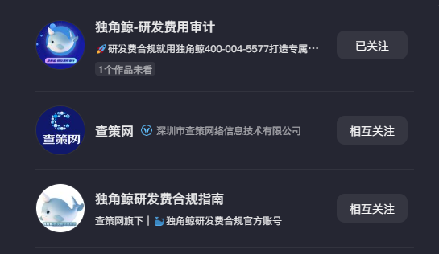

近两年 ToB 企服（财税合规）经验，主导企业 AI 内容生产体系从 0 到 1；独立设计并实现两个内部系统——独角鲸竞品情报工作台与 AI 编导工作台。全部线上可点开，数据真实可验证。
面试时不用我讲，你直接点。里面全部是真实运行的数据与完整的运行过程记录。
研发费管理系统赛道的竞争情报系统：138 个盯梢页面定时采集，抓回的内容先拆成事实卡，由人确认后才进库——保证情报可追溯、可引用。竞品档案、事件时间线、政策监控、话术库与选型对比文档，直接支撑销售打单。
3-Agent 内容生产管线，单 Agent 可重跑，运行过程全可视化（工具调用、token、耗时）；三层评测 + 真实播放数据回流校准，低分自动重写、失败显式降级。
7 章完整 PRD：需求背景 / 目标 / 市场与竞品分析 / 用户故事 / 功能需求 / AI 特定模块 / 项目实证。定位「创意策划 + 脚本编导」上游环节，与下游生成工具互补而非竞争。
从割裂的个人手工制作，变成有流程、有模板、有质检的内容生产能力。每个数字都可现场调取核对。

参数理解 → 卖点取舍 → 结构设计 → 成片交付。同一条需求给出两个切入版本，方法可复制到任何标品品类。
先读产品资料，把参数和卖点分开；判断哪个参数最容易被一眼看懂，作为前 3 秒的钩子；按「钩子 → 产品 → 场景 → 行动」组织结构；生成素材、剪辑、检查字幕与产品事实一致性；最后输出可直接发布的竖屏成片。
一个 Prompt 能解决的事情，不做复杂 Agent。只有涉及多步骤判断、知识来源、跨系统执行或数据反馈时，才提高系统复杂度。